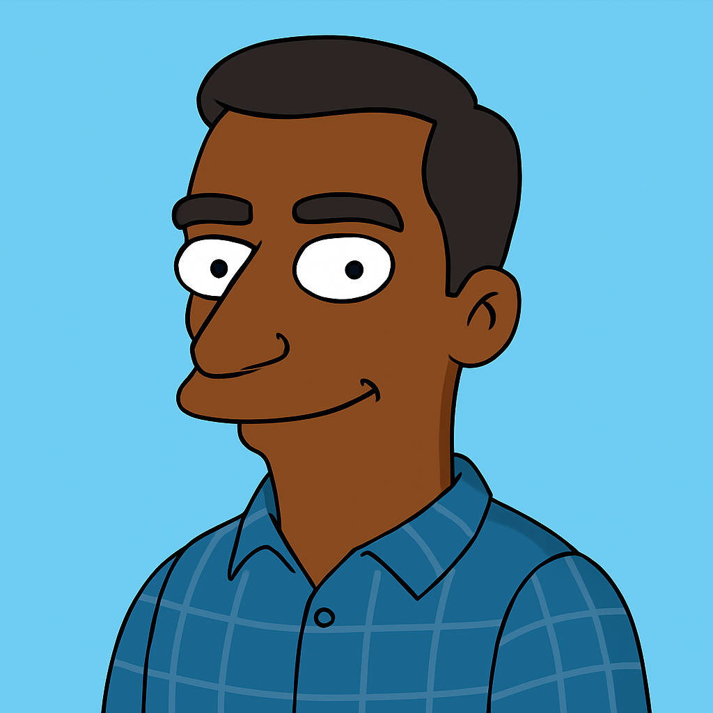

Quien soy ?
Le pedi a chatGPT que me hiciera la imagen mas cercana a la foto que tenia guardada. Soy un alumno de 4 año de la carrea de ingenieria informatica ingrese a mediados del 2021 y me quedan 20 materias para recibirme.
Le pedi a chatGPT que me hiciera la imagen mas cercana a la foto que tenia guardada. Soy un alumno de 4 año de la carrea de ingenieria informatica ingrese a mediados del 2021 y me quedan 20 materias para recibirme.